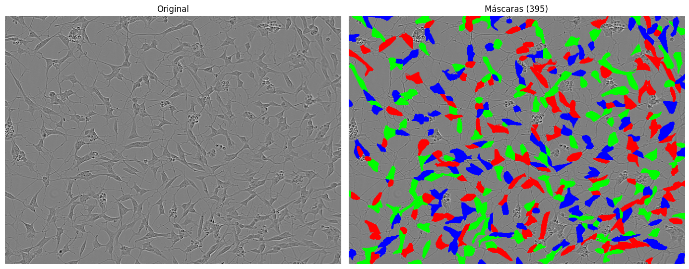
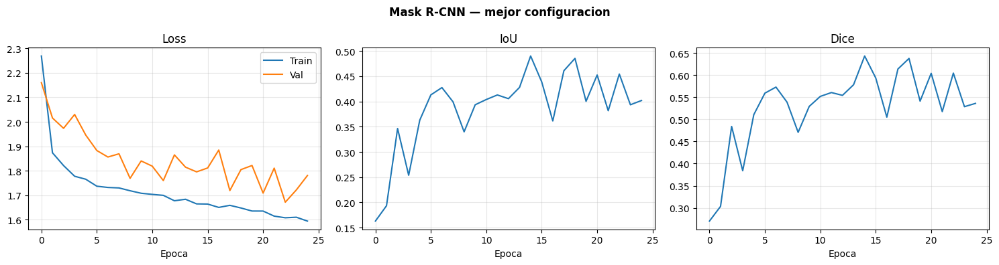

Modelado — Mask R-CNN con Swin#
!pip install -q pycocotools torchmetrics
import os, sys, json, random, time
from pathlib import Path
import numpy as np
import pandas as pd
import cv2
import matplotlib.pyplot as plt
import matplotlib.patches as patches
from PIL import Image
import torch
import torch.nn as nn
from torch.utils.data import Dataset, DataLoader
import torchvision
import torchvision.transforms as T
from torchvision.models.detection import maskrcnn_resnet50_fpn, MaskRCNN_ResNet50_FPN_Weights
from torchvision.models.detection.faster_rcnn import FastRCNNPredictor
from torchvision.models.detection.mask_rcnn import MaskRCNNPredictor
from torch.amp import GradScaler, autocast
from tqdm.auto import tqdm
from sklearn.model_selection import train_test_split, ParameterSampler
print(f'PyTorch : {torch.__version__}')
print(f'Torchvision : {torchvision.__version__}')
print(f'CUDA : {torch.cuda.is_available()}')
if torch.cuda.is_available():
for i in range(torch.cuda.device_count()):
g = torch.cuda.get_device_properties(i)
print(f' GPU {i}: {g.name} — {g.total_memory/1e9:.1f} GB')
else:
print('SIN GPU — activar T4x2 en Session options')
PyTorch : 2.10.0+cu128
Torchvision : 0.25.0+cu128
CUDA : True
GPU 0: Tesla T4 — 15.6 GB
GPU 1: Tesla T4 — 15.6 GB
# FIX #1: ruta correcta para Kaggle competitions
# /kaggle/input/sartorius-cell-instance-segmentation (SIN 'competitions/')
DATA_DIR = Path('/kaggle/input/competitions/sartorius-cell-instance-segmentation')
TRAIN_DIR = DATA_DIR / 'train'
TRAIN_CSV = DATA_DIR / 'train.csv'
OUTPUT_DIR = Path('/kaggle/working')
if not DATA_DIR.exists():
raise RuntimeError(
'Dataset no encontrado.\n'
'Panel derecho -> + Add data -> sartorius-cell-instance-segmentation -> Add'
)
print(f'Dataset OK: {len(list(TRAIN_DIR.glob("*.png")))} imagenes')
CFG = {
'seed' : 42,
'img_size' : 512,
'val_split' : 0.15,
'num_classes' : 4,
'score_thresh': 0.2,
'nms_thresh' : 0.3,
'use_fp16' : True,
'n_search' : 3,
# FIX #4: checkpoint en CFG para que la celda de visualizacion lo encuentre
'checkpoint' : str(OUTPUT_DIR / 'maskrcnn_best.pth'),
}
def set_seed(seed):
random.seed(seed); np.random.seed(seed)
torch.manual_seed(seed); torch.cuda.manual_seed_all(seed)
torch.backends.cudnn.benchmark = True
torch.backends.cudnn.deterministic = False
set_seed(CFG['seed'])
DEVICE = torch.device('cuda' if torch.cuda.is_available() else 'cpu')
NUM_GPUS = torch.cuda.device_count()
NUM_WORKERS = min(4, max(1, NUM_GPUS) * 2)
PIN_MEMORY = torch.cuda.is_available()
USE_AMP = torch.cuda.is_available() and CFG['use_fp16']
print(f'Device : {DEVICE}')
print(f'GPUs : {NUM_GPUS}')
print(f'AMP : {USE_AMP} | workers: {NUM_WORKERS}')
Dataset OK: 606 imagenes
Device : cuda
GPUs : 2
AMP : True | workers: 4
df = pd.read_csv(TRAIN_CSV)
print(f'Anotaciones : {len(df):,}')
print(f'Imagenes : {df.id.nunique()}')
print(f'\nTipos celulares:')
print(df.groupby('cell_type')['id'].nunique())
df.head(3)
Anotaciones : 73,585
Imagenes : 606
Tipos celulares:
cell_type
astro 131
cort 320
shsy5y 155
Name: id, dtype: int64
| id | annotation | width | height | cell_type | plate_time | sample_date | sample_id | elapsed_timedelta | |
|---|---|---|---|---|---|---|---|---|---|
| 0 | 0030fd0e6378 | 118145 6 118849 7 119553 8 120257 8 120961 9 1... | 704 | 520 | shsy5y | 11h30m00s | 2019-06-16 | shsy5y[diff]_E10-4_Vessel-714_Ph_3 | 0 days 11:30:00 |
| 1 | 0030fd0e6378 | 189036 1 189739 3 190441 6 191144 7 191848 8 1... | 704 | 520 | shsy5y | 11h30m00s | 2019-06-16 | shsy5y[diff]_E10-4_Vessel-714_Ph_3 | 0 days 11:30:00 |
| 2 | 0030fd0e6378 | 173567 3 174270 5 174974 5 175678 6 176382 7 1... | 704 | 520 | shsy5y | 11h30m00s | 2019-06-16 | shsy5y[diff]_E10-4_Vessel-714_Ph_3 | 0 days 11:30:00 |
def rle_decode(mask_rle: str, shape: tuple) -> np.ndarray:
if not isinstance(mask_rle, str):
return np.zeros(shape, dtype=np.uint8)
s = list(map(int, mask_rle.split()))
starts = np.array(s[0::2]) - 1
lengths = np.array(s[1::2])
ends = starts + lengths
img = np.zeros(shape[0] * shape[1], dtype=np.uint8)
for start, end in zip(starts, ends):
img[start:end] = 1
return img.reshape(shape)
CELL_TYPE_MAP = {
'shsy5y': 1,
'astro': 2,
'cort': 3
}
# ── Visualización rápida ────────────────────────────────────────────────
sample_id = df['id'].unique()[0]
sample_rows = df[df['id'] == sample_id]
img = np.array(
Image.open(TRAIN_DIR / f'{sample_id}.png').convert('RGB')
)
overlay = img.copy()
colors = [
(255, 0, 0),
(0, 255, 0),
(0, 0, 255)
]
for i, (_, row) in enumerate(sample_rows.iterrows()):
mask = rle_decode(
row['annotation'],
shape=img.shape[:2]
)
overlay[mask == 1] = colors[i % len(colors)]
# ── Plot ────────────────────────────────────────────────────────────────
fig, axes = plt.subplots(1, 2, figsize=(14, 6))
axes[0].imshow(img)
axes[0].set_title('Original')
axes[0].axis('off')
axes[1].imshow(overlay)
axes[1].set_title(f'Máscaras ({len(sample_rows)})')
axes[1].axis('off')
plt.tight_layout()
plt.show()
print(f'Tipo: {sample_rows.cell_type.iloc[0]}')

Tipo: shsy5y
class SartoriusDataset(Dataset):
def __init__(self, df, img_dir, img_size=512, augment=False):
self.df = df
self.img_dir = Path(img_dir)
self.img_size = img_size
self.augment = augment
self.ids = df['id'].unique().tolist()
def __len__(self):
return len(self.ids)
def __getitem__(self, idx):
img_id = self.ids[idx]
rows = self.df[self.df['id'] == img_id]
# ── Imagen — siempre 3 canales RGB ───────────────────────────────
img = np.array(
Image.open(self.img_dir / f'{img_id}.png').convert('RGB')
)
h0, w0 = img.shape[:2]
img = cv2.resize(img, (self.img_size, self.img_size))
if self.augment:
if random.random() > 0.5: img = np.fliplr(img).copy()
if random.random() > 0.5: img = np.flipud(img).copy()
# ── FIX: conversión explícita en lugar de T.ToTensor() ───────────
img_tensor = torch.from_numpy(
img.transpose(2, 0, 1) # (H,W,3) → (3,H,W)
).float() / 255.0
# ── Máscaras y targets ────────────────────────────────────────────
masks, boxes, labels = [], [], []
for _, row in rows.iterrows():
mask = rle_decode(row['annotation'], shape=(h0, w0))
mask = cv2.resize(
mask, (self.img_size, self.img_size),
interpolation=cv2.INTER_NEAREST
)
if mask.sum() == 0:
continue
masks.append(mask)
ys, xs = np.where(mask)
boxes.append([xs.min(), ys.min(), xs.max(), ys.max()])
labels.append(CELL_TYPE_MAP.get(row['cell_type'], 1))
if len(masks) == 0:
return img_tensor, {
'boxes' : torch.zeros((0, 4), dtype=torch.float32),
'labels' : torch.zeros(0, dtype=torch.int64),
'masks' : torch.zeros(
(0, self.img_size, self.img_size), dtype=torch.uint8),
'image_id': torch.tensor([idx]),
'area' : torch.zeros(0, dtype=torch.float32),
'iscrowd' : torch.zeros(0, dtype=torch.int64),
}
boxes_t = torch.as_tensor(boxes, dtype=torch.float32)
area = ((boxes_t[:, 3] - boxes_t[:, 1]) *
(boxes_t[:, 2] - boxes_t[:, 0]))
return img_tensor, {
'boxes' : boxes_t,
'labels' : torch.as_tensor(labels, dtype=torch.int64),
'masks' : torch.as_tensor(np.stack(masks), dtype=torch.uint8),
'image_id': torch.tensor([idx]),
'area' : area,
'iscrowd' : torch.zeros(len(labels), dtype=torch.int64),
}
def collate_fn(batch):
return tuple(zip(*batch))
# ── Split estratificado por cell_type ─────────────────────────────────────
all_ids = df['id'].unique()
cell_type_per_id = df.groupby('id')['cell_type'].first()
train_ids, val_ids = train_test_split(
all_ids,
test_size = CFG['val_split'],
stratify = cell_type_per_id[all_ids].values,
random_state = CFG['seed']
)
train_df = df[df['id'].isin(train_ids)]
val_df = df[df['id'].isin(val_ids)]
train_ds = SartoriusDataset(train_df, TRAIN_DIR, CFG['img_size'], augment=True)
val_ds = SartoriusDataset(val_df, TRAIN_DIR, CFG['img_size'], augment=False)
# ── Verificación de canales ───────────────────────────────────────────────
img_t, tgt = train_ds[0]
assert img_t.shape[0] == 3, f"Error: {img_t.shape[0]} canales, esperado 3"
print(f'Train: {len(train_ds)} | Val: {len(val_ds)}')
print(f'Imagen shape : {img_t.shape} ← debe ser (3, 512, 512)')
print(f'Boxes shape : {tgt["boxes"].shape}')
print(f'Máscaras shape: {tgt["masks"].shape}')
Train: 515 | Val: 91
Imagen shape : torch.Size([3, 512, 512]) ← debe ser (3, 512, 512)
Boxes shape : torch.Size([108, 4])
Máscaras shape: torch.Size([108, 512, 512])
def build_model(num_classes):
model = maskrcnn_resnet50_fpn(weights=MaskRCNN_ResNet50_FPN_Weights.DEFAULT)
in_f = model.roi_heads.box_predictor.cls_score.in_features
model.roi_heads.box_predictor = FastRCNNPredictor(in_f, num_classes)
in_fm = model.roi_heads.mask_predictor.conv5_mask.in_channels
model.roi_heads.mask_predictor = MaskRCNNPredictor(in_fm, 256, num_classes)
model.roi_heads.score_thresh = CFG['score_thresh']
model.roi_heads.nms_thresh = CFG['nms_thresh']
model.roi_heads.detections_per_img = 600
return model
# FIX #2 + #7: build_model_parallel definida correctamente
def build_model_parallel(num_classes, device):
model = build_model(num_classes).to(device)
return model
_m = build_model_parallel(CFG['num_classes'], DEVICE)
base = _m
print(f'Params entrenables: {sum(p.numel() for p in base.parameters() if p.requires_grad):,}')
print(f'VRAM estimada T4x2 fp16: bs=4 -> ~7 GB por GPU')
del _m, base
Downloading: "https://download.pytorch.org/models/maskrcnn_resnet50_fpn_coco-bf2d0c1e.pth" to /root/.cache/torch/hub/checkpoints/maskrcnn_resnet50_fpn_coco-bf2d0c1e.pth
100%|██████████| 170M/170M [00:00<00:00, 194MB/s]
Params entrenables: 43,710,759
VRAM estimada T4x2 fp16: bs=4 -> ~7 GB por GPU
@torch.inference_mode()
def evaluate_maskrcnn(model, loader, device, threshold=0.5):
model.eval()
iou_vals = []
dice_vals = []
for images, targets in loader:
images = [img.to(device, non_blocking=True) for img in images]
outputs = model(images)
for pred, target in zip(outputs, targets):
# sin predicciones
if len(pred['masks']) == 0:
iou_vals.append(0.0)
dice_vals.append(0.0)
continue
# máscara GT combinada
true_mask = (
target['masks'].sum(0) > 0
).cpu().numpy()
# usar solo máscaras con score alto
keep = pred['scores'].cpu() > threshold
if keep.sum() == 0:
continue
pred_masks = pred['masks'][keep]
# combinar instancias
pred_mask = (
pred_masks[:, 0] > 0.5
).sum(0).cpu().numpy() > 0
intersection = (pred_mask & true_mask).sum()
union = (pred_mask | true_mask).sum()
if union == 0:
continue
iou = intersection / union
dice = (2 * intersection) / (
pred_mask.sum() + true_mask.sum() + 1e-8
)
iou_vals.append(iou)
dice_vals.append(dice)
mean_iou = float(np.mean(iou_vals)) if iou_vals else 0.0
mean_dice = float(np.mean(dice_vals)) if dice_vals else 0.0
return mean_iou, mean_dice
def random_search(grid, n_iter, seed=42):
total = 1
for v in grid.values():
total *= len(v)
return list(
ParameterSampler(
grid,
n_iter=min(n_iter, total),
random_state=seed
)
)
def to_python(v):
if isinstance(v, (np.integer,)):
return int(v)
if isinstance(v, (np.floating,)):
return float(v)
return v
# ── Early stopping basado en IoU
class EarlyStopping:
def __init__(self, patience=10, min_delta=1e-4):
self.patience = patience
self.min_delta = min_delta
self.counter = 0
self.best = 0.0
self.stop = False
def __call__(self, val_iou):
if val_iou > self.best + self.min_delta:
self.best = val_iou
self.counter = 0
else:
self.counter += 1
if self.counter >= self.patience:
self.stop = True
return self.stop
# ── Validation loss ───────────────────────────────────────────────────────
@torch.inference_mode()
def validate_maskrcnn_loss(model, loader, device):
model.train() # necesario para obtener losses
total_loss = 0.0
for images, targets in loader:
images = [
img.to(device, non_blocking=True)
for img in images
]
targets = [
{k: v.to(device, non_blocking=True) for k, v in t.items()}
for t in targets
]
with autocast('cuda', enabled=USE_AMP):
loss_dict = model(images, targets)
losses = sum(loss for loss in loss_dict.values())
total_loss += losses.item()
return total_loss / len(loader)
# ── IoU + Dice ────────────────────────────────────────────────────────────
@torch.inference_mode()
def evaluate_maskrcnn(
model,
loader,
device,
threshold=0.2
):
model.eval()
iou_vals = []
dice_vals = []
for images, targets in loader:
images = [
img.to(device, non_blocking=True)
for img in images
]
outputs = model(images)
for pred, target in zip(outputs, targets):
# sin predicciones
if len(pred['masks']) == 0:
iou_vals.append(0.0)
dice_vals.append(0.0)
continue
# GT combinada
true_mask = (
target['masks'].sum(0) > 0
).cpu().numpy()
# filtrar por score
keep = pred['scores'].cpu() > threshold
if keep.sum() == 0:
iou_vals.append(0.0)
dice_vals.append(0.0)
continue
pred_masks = pred['masks'][keep]
# combinar instancias
pred_mask = (
pred_masks[:, 0] > 0.5
).sum(0).cpu().numpy() > 0
intersection = (pred_mask & true_mask).sum()
union = (pred_mask | true_mask).sum()
if union == 0:
continue
iou = intersection / union
dice = (
2 * intersection
) / (
pred_mask.sum() + true_mask.sum() + 1e-8
)
iou_vals.append(iou)
dice_vals.append(dice)
mean_iou = float(np.mean(iou_vals)) if iou_vals else 0.0
mean_dice = float(np.mean(dice_vals)) if dice_vals else 0.0
return mean_iou, mean_dice
# ── Train ─────────────────────────────────────────────────────────────────
def train_maskrcnn(
hparams,
train_loader,
val_loader,
device=DEVICE
):
model = build_model_parallel(
CFG['num_classes'],
device
)
optimizer = torch.optim.AdamW(
[p for p in model.parameters() if p.requires_grad],
lr=hparams['lr'],
weight_decay=hparams['weight_decay']
)
scheduler = torch.optim.lr_scheduler.CosineAnnealingLR(
optimizer,
T_max=hparams['epochs'],
eta_min=1e-6
)
scaler = GradScaler(
'cuda',
enabled=USE_AMP
)
es = EarlyStopping(
patience=hparams['patience']
)
ckpt_path = CFG['checkpoint']
history = {
'train_loss': [],
'val_loss' : [],
'val_iou' : [],
'val_dice' : []
}
print(
f'[Mask R-CNN] '
f'lr={hparams["lr"]} | '
f'bs={hparams["batch_size"]} | '
f'wd={hparams["weight_decay"]} | '
f'epochs={hparams["epochs"]}'
)
for epoch in range(1, hparams['epochs'] + 1):
t0 = time.time()
# ── TRAIN ───────────────────────────────────────────────────────
model.train()
epoch_loss = 0.0
for images, targets in tqdm(
train_loader,
desc=f'ep{epoch}',
leave=False
):
images = [
img.to(device, non_blocking=True)
for img in images
]
targets = [
{k: v.to(device, non_blocking=True) for k, v in t.items()}
for t in targets
]
optimizer.zero_grad(set_to_none=True)
with autocast('cuda', enabled=USE_AMP):
loss_dict = model(images, targets)
losses = sum(
loss for loss in loss_dict.values()
)
scaler.scale(losses).backward()
scaler.unscale_(optimizer)
torch.nn.utils.clip_grad_norm_(
model.parameters(),
1.0
)
scaler.step(optimizer)
scaler.update()
epoch_loss += losses.item()
# ── VALIDATION ──────────────────────────────────────────────────
val_loss = validate_maskrcnn_loss(
model,
val_loader,
device
)
val_iou, val_dice = evaluate_maskrcnn(
model,
val_loader,
device,
threshold=CFG['score_thresh']
)
scheduler.step()
stop = es(val_iou)
improved = val_iou >= es.best
if improved:
torch.save(
model.state_dict(),
ckpt_path
)
# ── History ─────────────────────────────────────────────────────
tloss = epoch_loss / len(train_loader)
history['train_loss'].append(tloss)
history['val_loss'].append(val_loss)
history['val_iou'].append(val_iou)
history['val_dice'].append(val_dice)
elapsed = time.time() - t0
# ── Logs ────────────────────────────────────────────────────────
run_full = (
epoch % 5 == 0
) or (
epoch == hparams['epochs']
)
tag = '[FULL]' if run_full else '[fast]'
print(
f'Ep {epoch:02d}/{hparams["epochs"]} {tag} | '
f'loss={tloss:.4f} | '
f'iou={val_iou:.4f} | '
f'dice={val_dice:.4f} | '
f'{elapsed:.0f}s'
f'{" *" if improved else ""}'
f'{" | es=" + str(es.counter) + "/" + str(hparams["patience"]) if es.counter > 0 else ""}'
)
if torch.cuda.is_available():
torch.cuda.empty_cache()
if stop:
print(f'Early stopping ep {epoch}')
break
# ── Load best ───────────────────────────────────────────────────────
best_model = build_model(
CFG['num_classes']
).to(device)
best_model.load_state_dict(
torch.load(
ckpt_path,
map_location=device
)
)
print(f'Mejor IoU: {es.best:.4f}')
return best_model, history, es.best
print('train_maskrcnn listo.')
train_maskrcnn listo.
HPARAM_GRID = {
'lr': [1e-5, 5e-5, 1e-4],
'weight_decay': [1e-4, 5e-4],
'batch_size': [2, 4],
'epochs': [50],
'patience': [10],
}
grid = random_search(HPARAM_GRID, n_iter=CFG['n_search'])
print(f'Combinaciones: {len(grid)}')
for i, p in enumerate(grid):
print(f' {i+1}. lr={p["lr"]} | wd={p["weight_decay"]} | bs={p["batch_size"]}')
Combinaciones: 3
1. lr=0.0001 | wd=0.0001 | bs=4
2. lr=5e-05 | wd=0.0005 | bs=4
3. lr=1e-05 | wd=0.0001 | bs=2
best_model_rcnn = None
best_hparams_rcnn = None
best_history_rcnn = None
best_iou_rcnn = 0.0
for idx, params in enumerate(grid):
print(f'\n{"="*60}\nCOMBINACION {idx+1}/{len(grid)}\n{params}\n{"="*60}')
if torch.cuda.is_available(): torch.cuda.empty_cache()
# FIX #3: batch_size viene de params, no de CFG (que no lo tiene)
loader_kw = dict(collate_fn=collate_fn, num_workers=NUM_WORKERS,
pin_memory=PIN_MEMORY, persistent_workers=(NUM_WORKERS > 0))
train_loader = DataLoader(train_ds, batch_size=params['batch_size'],
shuffle=True, **loader_kw)
val_loader = DataLoader(val_ds, batch_size=1,
shuffle=False, **loader_kw)
model, history, iou = train_maskrcnn(params, train_loader, val_loader)
if iou > best_iou_rcnn:
best_iou_rcnn = iou
best_model_rcnn = model
best_history_rcnn = history
best_hparams_rcnn = params
print(f'\n{"="*60}')
print(f'MEJOR — Mask R-CNN')
print(f'Best IoU : {best_iou_rcnn:.4f}')
print(f'Hparams : {best_hparams_rcnn}')
============================================================
COMBINACION 1/3
{'weight_decay': 0.0001, 'patience': 10, 'lr': 0.0001, 'epochs': 50, 'batch_size': 4}
============================================================
[Mask R-CNN] lr=0.0001 | bs=4 | wd=0.0001 | epochs=50
Ep 01/50 [fast] | loss=2.2936 | iou=0.1522 | dice=0.2463 | 463s *
Ep 02/50 [fast] | loss=1.8754 | iou=0.2649 | dice=0.3888 | 341s *
Ep 03/50 [fast] | loss=1.8260 | iou=0.3770 | dice=0.5201 | 250s *
Ep 04/50 [fast] | loss=1.7895 | iou=0.3814 | dice=0.5185 | 227s *
Ep 05/50 [FULL] | loss=1.7933 | iou=0.3253 | dice=0.4323 | 168s | es=1/10
Ep 06/50 [fast] | loss=1.7594 | iou=0.3342 | dice=0.4769 | 176s | es=2/10
Ep 07/50 [fast] | loss=1.7573 | iou=0.3642 | dice=0.5037 | 153s | es=3/10
Ep 08/50 [fast] | loss=1.7347 | iou=0.3562 | dice=0.4830 | 147s | es=4/10
Ep 09/50 [fast] | loss=1.7286 | iou=0.4237 | dice=0.5733 | 136s *
Ep 10/50 [FULL] | loss=1.7230 | iou=0.3334 | dice=0.4394 | 156s | es=1/10
Ep 11/50 [fast] | loss=1.7164 | iou=0.3638 | dice=0.5010 | 127s | es=2/10
Ep 12/50 [fast] | loss=1.7009 | iou=0.3652 | dice=0.4919 | 139s | es=3/10
Ep 13/50 [fast] | loss=1.6834 | iou=0.3921 | dice=0.5434 | 154s | es=4/10
Ep 14/50 [fast] | loss=1.6904 | iou=0.3523 | dice=0.4947 | 132s | es=5/10
Ep 15/50 [FULL] | loss=1.6711 | iou=0.3529 | dice=0.4713 | 147s | es=6/10
Ep 16/50 [fast] | loss=1.6830 | iou=0.4373 | dice=0.5879 | 125s *
Ep 17/50 [fast] | loss=1.6866 | iou=0.4399 | dice=0.5934 | 131s *
Ep 18/50 [fast] | loss=1.6794 | iou=0.4332 | dice=0.5805 | 128s | es=1/10
Ep 19/50 [fast] | loss=1.6538 | iou=0.4593 | dice=0.6104 | 134s *
Ep 20/50 [FULL] | loss=1.6518 | iou=0.4484 | dice=0.5994 | 127s | es=1/10
Ep 21/50 [fast] | loss=1.6356 | iou=0.4611 | dice=0.6127 | 126s *
Ep 22/50 [fast] | loss=1.6312 | iou=0.4329 | dice=0.5842 | 120s | es=1/10
Ep 23/50 [fast] | loss=1.6337 | iou=0.3958 | dice=0.5382 | 128s | es=2/10
Ep 24/50 [fast] | loss=1.6187 | iou=0.2536 | dice=0.3750 | 120s | es=3/10
Ep 25/50 [FULL] | loss=1.6143 | iou=0.4421 | dice=0.5941 | 120s | es=4/10
Ep 26/50 [fast] | loss=1.6077 | iou=0.3911 | dice=0.5416 | 120s | es=5/10
Ep 27/50 [fast] | loss=1.5871 | iou=0.3347 | dice=0.4756 | 120s | es=6/10
Ep 28/50 [fast] | loss=1.5754 | iou=0.3848 | dice=0.5305 | 120s | es=7/10
Ep 29/50 [fast] | loss=1.5734 | iou=0.4143 | dice=0.5626 | 124s | es=8/10
Ep 30/50 [FULL] | loss=1.5731 | iou=0.4098 | dice=0.5582 | 124s | es=9/10
Ep 31/50 [fast] | loss=1.5589 | iou=0.3621 | dice=0.5178 | 123s | es=10/10
Early stopping ep 31
Mejor IoU: 0.4611
============================================================
COMBINACION 2/3
{'weight_decay': 0.0005, 'patience': 10, 'lr': 5e-05, 'epochs': 50, 'batch_size': 4}
============================================================
[Mask R-CNN] lr=5e-05 | bs=4 | wd=0.0005 | epochs=50
Ep 01/50 [fast] | loss=2.2687 | iou=0.1629 | dice=0.2700 | 132s *
Ep 02/50 [fast] | loss=1.8735 | iou=0.1933 | dice=0.3032 | 120s *
Ep 03/50 [fast] | loss=1.8213 | iou=0.3465 | dice=0.4841 | 124s *
Ep 04/50 [fast] | loss=1.7776 | iou=0.2537 | dice=0.3839 | 118s | es=1/10
Ep 05/50 [FULL] | loss=1.7655 | iou=0.3630 | dice=0.5107 | 124s *
Ep 06/50 [fast] | loss=1.7370 | iou=0.4131 | dice=0.5594 | 124s *
Ep 07/50 [fast] | loss=1.7319 | iou=0.4275 | dice=0.5731 | 119s *
Ep 08/50 [fast] | loss=1.7300 | iou=0.3993 | dice=0.5389 | 119s | es=1/10
Ep 09/50 [fast] | loss=1.7185 | iou=0.3398 | dice=0.4707 | 119s | es=2/10
Ep 10/50 [FULL] | loss=1.7082 | iou=0.3935 | dice=0.5294 | 120s | es=3/10
Ep 11/50 [fast] | loss=1.7036 | iou=0.4039 | dice=0.5521 | 120s | es=4/10
Ep 12/50 [fast] | loss=1.6997 | iou=0.4129 | dice=0.5608 | 122s | es=5/10
Ep 13/50 [fast] | loss=1.6775 | iou=0.4056 | dice=0.5544 | 119s | es=6/10
Ep 14/50 [fast] | loss=1.6837 | iou=0.4279 | dice=0.5785 | 123s *
Ep 15/50 [FULL] | loss=1.6648 | iou=0.4902 | dice=0.6435 | 123s *
Ep 16/50 [fast] | loss=1.6641 | iou=0.4388 | dice=0.5937 | 121s | es=1/10
Ep 17/50 [fast] | loss=1.6504 | iou=0.3614 | dice=0.5052 | 120s | es=2/10
Ep 18/50 [fast] | loss=1.6589 | iou=0.4609 | dice=0.6140 | 123s | es=3/10
Ep 19/50 [fast] | loss=1.6480 | iou=0.4854 | dice=0.6380 | 118s | es=4/10
Ep 20/50 [FULL] | loss=1.6356 | iou=0.4003 | dice=0.5413 | 119s | es=5/10
Ep 21/50 [fast] | loss=1.6355 | iou=0.4525 | dice=0.6042 | 119s | es=6/10
Ep 22/50 [fast] | loss=1.6148 | iou=0.3817 | dice=0.5177 | 121s | es=7/10
Ep 23/50 [fast] | loss=1.6081 | iou=0.4544 | dice=0.6047 | 119s | es=8/10
Ep 24/50 [fast] | loss=1.6103 | iou=0.3935 | dice=0.5288 | 121s | es=9/10
Ep 25/50 [FULL] | loss=1.5945 | iou=0.4019 | dice=0.5363 | 120s | es=10/10
Early stopping ep 25
Mejor IoU: 0.4902
============================================================
COMBINACION 3/3
{'weight_decay': 0.0001, 'patience': 10, 'lr': 1e-05, 'epochs': 50, 'batch_size': 2}
============================================================
[Mask R-CNN] lr=1e-05 | bs=2 | wd=0.0001 | epochs=50
Ep 01/50 [fast] | loss=2.3667 | iou=0.2047 | dice=0.3265 | 202s *
Ep 02/50 [fast] | loss=1.9018 | iou=0.2720 | dice=0.3984 | 143s *
Ep 03/50 [fast] | loss=1.8583 | iou=0.1909 | dice=0.3106 | 131s | es=1/10
Ep 04/50 [fast] | loss=1.8220 | iou=0.1651 | dice=0.2732 | 125s | es=2/10
Ep 05/50 [FULL] | loss=1.8001 | iou=0.3225 | dice=0.4734 | 126s *
Ep 06/50 [fast] | loss=1.7818 | iou=0.2731 | dice=0.4053 | 124s | es=1/10
Ep 07/50 [fast] | loss=1.7779 | iou=0.2892 | dice=0.4222 | 124s | es=2/10
Ep 08/50 [fast] | loss=1.7579 | iou=0.3470 | dice=0.4799 | 126s *
Ep 09/50 [fast] | loss=1.7499 | iou=0.3800 | dice=0.5355 | 126s *
Ep 10/50 [FULL] | loss=1.7446 | iou=0.3533 | dice=0.4849 | 125s | es=1/10
Ep 11/50 [fast] | loss=1.7316 | iou=0.2909 | dice=0.4199 | 122s | es=2/10
Ep 12/50 [fast] | loss=1.7245 | iou=0.3455 | dice=0.4849 | 121s | es=3/10
Ep 13/50 [fast] | loss=1.7075 | iou=0.3333 | dice=0.4689 | 121s | es=4/10
Ep 14/50 [fast] | loss=1.7127 | iou=0.4085 | dice=0.5590 | 127s *
Ep 15/50 [FULL] | loss=1.7037 | iou=0.3665 | dice=0.5093 | 122s | es=1/10
Ep 16/50 [fast] | loss=1.6932 | iou=0.4116 | dice=0.5592 | 124s *
Ep 17/50 [fast] | loss=1.6880 | iou=0.3338 | dice=0.4551 | 121s | es=1/10
Ep 18/50 [fast] | loss=1.6871 | iou=0.4170 | dice=0.5711 | 122s *
Ep 19/50 [fast] | loss=1.6787 | iou=0.3574 | dice=0.4844 | 122s | es=1/10
Ep 20/50 [FULL] | loss=1.6802 | iou=0.3482 | dice=0.4688 | 121s | es=2/10
Ep 21/50 [fast] | loss=1.6725 | iou=0.3908 | dice=0.5402 | 122s | es=3/10
Ep 22/50 [fast] | loss=1.6759 | iou=0.4059 | dice=0.5477 | 122s | es=4/10
Ep 23/50 [fast] | loss=1.6703 | iou=0.3994 | dice=0.5501 | 123s | es=5/10
Ep 24/50 [fast] | loss=1.6630 | iou=0.4178 | dice=0.5599 | 122s *
Ep 25/50 [FULL] | loss=1.6556 | iou=0.3765 | dice=0.5224 | 123s | es=1/10
Ep 26/50 [fast] | loss=1.6691 | iou=0.3527 | dice=0.4764 | 121s | es=2/10
Ep 27/50 [fast] | loss=1.6566 | iou=0.3537 | dice=0.5018 | 121s | es=3/10
Ep 28/50 [fast] | loss=1.6496 | iou=0.3562 | dice=0.4965 | 123s | es=4/10
Ep 29/50 [fast] | loss=1.6412 | iou=0.4062 | dice=0.5498 | 123s | es=5/10
Ep 30/50 [FULL] | loss=1.6431 | iou=0.3768 | dice=0.5158 | 124s | es=6/10
Ep 31/50 [fast] | loss=1.6258 | iou=0.4044 | dice=0.5512 | 124s | es=7/10
Ep 32/50 [fast] | loss=1.6249 | iou=0.3628 | dice=0.5002 | 125s | es=8/10
Ep 33/50 [fast] | loss=1.6280 | iou=0.3795 | dice=0.5153 | 124s | es=9/10
Ep 34/50 [fast] | loss=1.6114 | iou=0.4201 | dice=0.5660 | 123s *
Ep 35/50 [FULL] | loss=1.6210 | iou=0.4039 | dice=0.5499 | 124s | es=1/10
Ep 36/50 [fast] | loss=1.6188 | iou=0.3606 | dice=0.4966 | 122s | es=2/10
Ep 37/50 [fast] | loss=1.6084 | iou=0.3905 | dice=0.5395 | 123s | es=3/10
Ep 38/50 [fast] | loss=1.6003 | iou=0.3495 | dice=0.4847 | 125s | es=4/10
Ep 39/50 [fast] | loss=1.5918 | iou=0.3836 | dice=0.5247 | 122s | es=5/10
Ep 40/50 [FULL] | loss=1.5920 | iou=0.3814 | dice=0.5243 | 124s | es=6/10
Ep 41/50 [fast] | loss=1.5874 | iou=0.3909 | dice=0.5373 | 126s | es=7/10
Ep 42/50 [fast] | loss=1.5967 | iou=0.3784 | dice=0.5270 | 123s | es=8/10
Ep 43/50 [fast] | loss=1.5897 | iou=0.3855 | dice=0.5301 | 122s | es=9/10
Ep 44/50 [fast] | loss=1.5842 | iou=0.3599 | dice=0.4981 | 123s | es=10/10
Early stopping ep 44
Mejor IoU: 0.4201
============================================================
MEJOR — Mask R-CNN
Best IoU : 0.4902
Hparams : {'weight_decay': 0.0005, 'patience': 10, 'lr': 5e-05, 'epochs': 50, 'batch_size': 4}
fig, axes = plt.subplots(1, 3, figsize=(15, 4))
fig.suptitle(
'Mask R-CNN — mejor configuracion',
fontweight='bold'
)
axes[0].plot(best_history_rcnn['train_loss'], label='Train')
axes[0].plot(best_history_rcnn['val_loss'], label='Val')
axes[0].set_title('Loss')
axes[0].legend()
axes[1].plot(best_history_rcnn['val_iou'])
axes[1].set_title('IoU')
axes[2].plot(best_history_rcnn['val_dice'])
axes[2].set_title('Dice')
for ax in axes:
ax.grid(True, alpha=0.3)
ax.set_xlabel('Epoca')
plt.tight_layout()
plt.show()
results = {
'best_iou' : float(best_iou_rcnn),
'best_hparams': {k: to_python(v) for k, v in best_hparams_rcnn.items()},
'epochs_run' : len(best_history_rcnn['train_loss']),
'train_loss' : [float(x) for x in best_history_rcnn['train_loss']],
'val_loss' : [float(x) for x in best_history_rcnn['val_loss']],
'val_iou' : [float(x) for x in best_history_rcnn['val_iou']],
'val_dice' : [float(x) for x in best_history_rcnn['val_dice']],
}
with open(OUTPUT_DIR / 'results.json', 'w') as f:
json.dump(results, f, indent=2)
# ── Verificar que el checkpoint existe y es válido ────────────────────────
ckpt_path = Path(CFG['checkpoint'])
if ckpt_path.exists():
ckpt_size = ckpt_path.stat().st_size
print(f'Checkpoint OK: {ckpt_path.name} ({ckpt_size/1e6:.1f} MB)')
# Verificar que se puede cargar correctamente
try:
state = torch.load(ckpt_path, map_location='cpu')
print(f'Checkpoint verificado: {len(state)} capas guardadas')
del state
except Exception as e:
print(f'ERROR al verificar checkpoint: {e}')
else:
print(f'ADVERTENCIA: checkpoint no encontrado en {ckpt_path}')
print('Guardando desde best_model_rcnn...')
torch.save(best_model_rcnn.state_dict(), ckpt_path)
print(f'Checkpoint guardado: {ckpt_path}')
# ── Listado final de archivos exportados ──────────────────────────────────
print('\nArchivos en /kaggle/working:')
for p in sorted(OUTPUT_DIR.iterdir()):
sz = p.stat().st_size
tag = ' ← CHECKPOINT' if p.suffix == '.pth' else \
' ← RESULTADOS' if p.suffix == '.json' else ''
if sz > 1e6:
print(f' {p.name:<40} {sz/1e6:.1f} MB{tag}')
else:
print(f' {p.name:<40} {sz/1e3:.1f} KB{tag}')
# ── Recordatorio para descarga ────────────────────────────────────────────
print('\nPara usar en 05_evaluacion_final.ipynb:')
print(f' Modelo : {ckpt_path.name}')
print(f' Metricas: results.json')
print('Descarga desde: Kaggle → Output → Download')

Checkpoint OK: maskrcnn_best.pth (176.3 MB)
Checkpoint verificado: 307 capas guardadas
Archivos en /kaggle/working:
.virtual_documents 4.1 KB
maskrcnn_best.pth 176.3 MB ← CHECKPOINT
results.json 2.7 KB ← RESULTADOS
Para usar en 05_evaluacion_final.ipynb:
Modelo : maskrcnn_best.pth
Metricas: results.json
Descarga desde: Kaggle → Output → Download